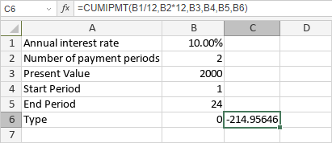

CUMIPMT funkcija
Funkcija CUMIPMT je jedna od finansijskih funkcija. Koristi se za izračunavanje kumulativnih kamata plaćenih na investiciju između dva perioda, na osnovu zadate kamatne stope i konstantnog rasporeda uplata.
Sintaksa
CUMIPMT(rate, nper, pv, start_period, end_period, type)
Funkcija CUMIPMT ima sledeće argumente:
| Argument | Opis |
|---|---|
| rate | Kamatna stopa za investiciju. |
| nper | Broj uplata. |
| pv | Trenutna vrednost uplata. |
| start_period | Prvi period uključen u izračunavanje. Vrednost mora biti od 1 do nper. |
| end_period | Zadnji period uključen u izračunavanje. Vrednost mora biti od 1 do nper. |
| type | Period kada su uplate dospele. Ako je postavljeno na 0 ili izostavljeno, funkcija pretpostavlja da su uplate dospele na kraju perioda. Ako je type postavljeno na 1, uplate su dospele na početku perioda. |
Napomene
Gotovina koja se plaća (npr. depoziti) prikazana je negativnim brojevima; gotovina koja se prima (npr. dividende) prikazana je pozitivnim brojevima. Jedinice za rate i nper moraju biti konzistentne: koristite N%/12 za rate i N*12 za nper za mesečne uplate, N%/4 za rate i N*4 za nper za kvartalne uplate, N% za rate i N za nper za godišnje uplate.
Kako primeniti funkciju CUMIPMT.
Primeri
Slika ispod prikazuje rezultat koji vraća funkcija CUMIPMT.
